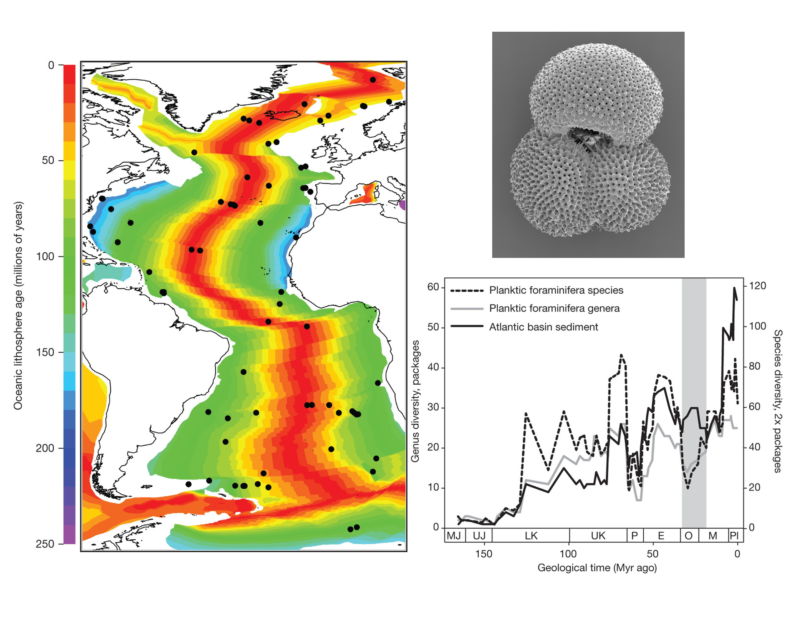

![]()
[More than 10 years ago I published a short blog post on a now-defunct wonderful web resource, www.biodiverseperspectives.com. It was run by ECRs in ecology, and remained very active until more or less late 2016. It hosted hundreds of blog posts on all kind of ecologies, including interviews to top scientists. I don’t know what happened to the blog, and I think it should be re-hosted again, even re-run again. Anyway, here I post what I wrote.]
Unraveling the relative roles of biotic interactions and abiotic fluctuations on diversification and extinction is a major tenant of evolutionary biology. Exploring the impact of species interactions and climate variability on local population extinction and colonization is a relatively easy task at ecological time scales. But when it comes to linking these issues to species extinction and diversification in geological deep time the ability to tease apart the living from the non-living may become a formidable task. The paper by Shanan E. Peters and colleagues is one of such rare occasions in which these issues are tackled successfully. This study capitalizes on the emerging field of macrostatigraphy, which aims at connecting plate tectonics and protracted physicochemical changes in the ocean-atmosphere system to spatiotemporal shifts in deep-sea sedimentation. The oceanic lithosphere is covered by a sediment layer having a few hundred meters on average. Oceanic floor is constantly being created along mid-oceanic rifts, so that the sediment layer is thicker the farther away from the rift. Armed with this knowledge, Peters et al. gathered basin-scale data on the lithology, thickness and age of sediments packages recovered from 73 drilling offshore sampling sites spread through the Atlantic Ocean (see figure). At the same time, they assembled global stratigraphic ranges of 671 species of planktonic Foraminifera inhabiting the world oceans from the Jurassic period to the present. Foraminifera are amoeboid protists extremely widespread, abundant and diverse, and synthetize a shell made of calcium carbonate which fossilize readily.

After correlating both time series, a fascinating pattern emerged: species diversity and extinction rates seem to be controlled by tectonically and climatically forced changes in ocean chemistry and dynamics throughout the last 160 m.y. Strikingly however, the rates of species origination seem to be basically decoupled from any measure of macrostatigraphic quantity, suggesting indeed that biological factors (i.e., species interactions) might be controlling diversification. Interestingly, these patterns break down transiently during certain periods, such as during the aftereffects of the Chicxulub asteroid impact at the end of the Cretaceous. The bottom line? In geological time extinction appears largely non-selective, but diversification seems the opposite.
Some may say that the results in Peters et al. are not that compelling: after all, they resonate with the famous view from paleontology on planetary changes and mass extinctions: ¿Is it bad genes, or bad luck?. On the other hand, diversification as driven by natural selection is a rather simple demographic process: if you have a trait correlated with some measure of breeding success or survival, and link it with a transgenerational response to that correlation through genetic inheritance, you end up with adaptive evolution. It logically follows that if the phenotypic correlation is high and heritability is large, natural selection becomes strong and operates quite fast. But, do we really see a consistent phenotypic change in natural populations across tens to hundreds of generations? Well, the answer is not really that much. How to interpret this?
Natural selection is a process with a lot of subtleties, and the answer is not simple. But I’ve always thought that, to a large extent, this apparent paradox boiled down to an insidious effect of the metaphor of “survival of the fittest”. For me, it is difficult to regard long-term evolution by natural selection as a process by which certain traits are optimized under a set of environmental conditions, in the sense that trait values outside the optima are deleted across a run of selective events. Natural selection is not a law, is a probability distribution: at any given moment you can bear a trait in the optima, and still fail to survive or reproduce due to contingencies, so, as an “unlucky” one, you will fade away with the “unfits”; and the remaining phenotypes will persist, irrespective of their properties. This is a more nuanced view of evolution, a sort of “non-survival of the non-fit”, and is a view increasingly supported by paleobiological studies such as the one by Peters et al.
Citation
@online{almaraz2025,
author = {Almaraz, Pablo},
title = {Diversification and Extinction Dynamics Buried in the Sea
Floor},
date = {2025-03-05},
url = {https://robustecologies.github.io/blog/2025/03/05/diversification-in-the-seaflor/},
langid = {en}
}